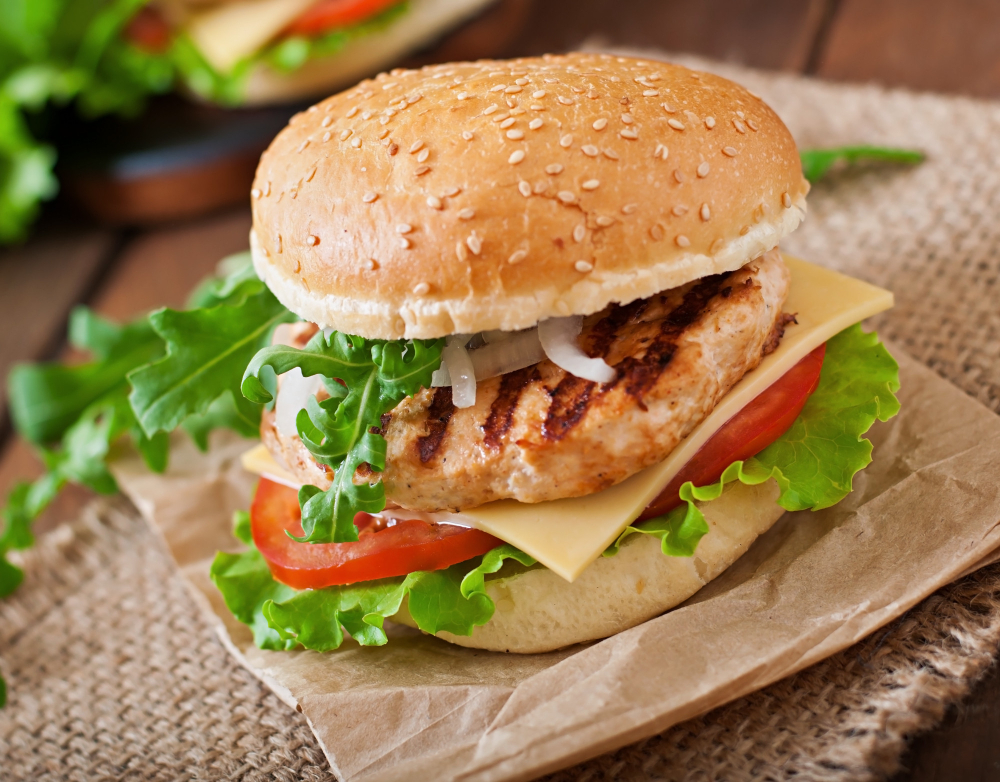

Thomas A. Edison CTE High School
Web Development
Project
Harbans Singh
10/17/23
How to make Chicken Sandwich

Image by timolina on Freepik
Ingredients:
- 1 Bread Roll
- 1 Chicken Cutlet
- American Cheese
- Lettuce
- Sliced tomatoes
- Sliced onions
- Salt and pepper
- Vegetable Oil
- Honey mustard
- Hot sauce
- White sauce
Directions
- Turn on stove to high heat and put vegatable oil
- Place chicken cutlet on stove for 3-4 minutes
- Put mayonaise on each side of bread roll
- Put all sauces listed in ingrediants on bread
- Place tomatoes on top and then lettuce
- Flip the chicken cutlet and leave it for 1-2 minutes
- Cut up the chicken cutlet into smaller pieces and leave it for a minute
- Place cheese on top and then move it onto the bread
- Put salt and pepper onto the sandwich then close it
*Optional*
If you want to toast the bread you can place the bread into a counter top oven until crispy